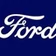
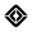
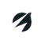
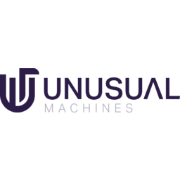
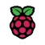

Et af de … temaer i NewDeal Invest
Robotter & fysisk AI
Fysisk AI er kunstig intelligens, der styrer maskiner, som bevæger sig selv.
Det kan være en bil, der bremser selv, en drone, en robottaxa eller en robot, der flytter kasser på et lager. I fonden består temaet af … selskaber.
Her udforsker du fondens selskaber i temaet. Udvalget dækker ikke hele teknologiområdet.
AI-genererede forklaringer og forenklede illustrationer · Om indhold og kilder
Her udforsker du fondens investeringer, ikke en fuldstændig gennemgang af teknologiområder eller selskaber. Selskabsbeskrivelserne bygger på selskabernes egne oplysninger og øvrige angivne kilder. De er ikke manuelt faktatjekket af NewDeal Invest og kan indeholde fejl eller være forældede.
Illustrationerne forenkler sammenhængene. En forbindelse viser ikke i sig selv et dokumenteret kunde- eller leverandørforhold. Fondstal vises særskilt med kilde og dato. NewDeal Invests egne kommentarer og citater er angivet med afsender og kilde.
Forandringen
AI har fået hjul, vinger og arme
Indtil for nylig levede kunstig intelligens mest på skærmen. Nu sidder den i maskiner, der bevæger sig selv: biler, der hjælper føreren, robottaxaer, droner og robotter på lagre og fabrikker.
En maskine, der skal klare sig selv, skal kunne tre ting. Den skal se omgivelserne, forstå, hvad den ser, og handle på det. Temaets selskaber laver hver sin del af den kæde.
Meget er stadig forsøg. En maskine, der virker i en demonstration, skal også virke sikkert hver dag og godkendes, før den giver omsætning.
- Kina354.00059 % af verden
- USA38.500
- Japan36.219
- Sydkorea30.000
- Tysklandunder 25.000
Tallene for USA og Tyskland er afrundede i kilden. Kilde: brancheforeningen IFR.
Skift sans
Sådan ser en selvkørende bil krydset
Skift mellem kameraet, lidaren og hjernen, og slå natten til. Så kan du se, hvorfor mange selvkørende biler bruger flere slags sanser på én gang.
Kamera
Kameraet ser farver, skilte og lys, og AI genkender bilen, cyklisten, fodgængeren og det røde lys. Men kameraet ser dårligere i mørke, og det er svært at måle præcis afstand ud fra et billede.
Laver chips og software, der tolker billederne, eller bruger kameraer i egne biler
Lidar
Lidaren sender laserlys ud og måler, hvor lang tid det tager at komme tilbage. Den tegner omgivelserne som prikker og ved præcis, hvor langt væk tingene er, også når det er mørkt. Til gengæld ser den ikke farver, så den kan ikke se, om lyset er rødt.
Laver lidar
Hjernen
Hjernen samler det, kameraet og lidaren ser, gætter på, hvor fodgængeren er på vej hen, og vælger, hvad bilen skal gøre. Her bremser den og venter.
Laver software, der kører køretøjet
Om natten overser kameraet cyklisten og er usikkert på fodgængeren. Lidaren ser dem lige så tydeligt som om dagen.
Forretningsmodellerne
Seks dele af en maskine, der kan tænke selv
Temaets selskaber er delt efter, hvilken del af maskinen de laver: hjulene, vingerne, nerverne, øjnene, hjernen eller armene og benene. Bjælken viser, hvor meget hver del fylder i fonden.
Hjul: biler
…af fonden
Elbiler og biler med systemer, der hjælper føreren med at styre og bremse. Selskaberne tjener mest på at sælge bilerne. Tesla tjener også på energilagring og arbejder på robottaxaer og robotten Optimus, og de fleste af Fords biler kører stadig på benzin eller diesel.
 TeslaElbiler, energilagring og solenergi. Arbejder på selvkørende biler og robottaxaer og på robotten Optimus.
TeslaElbiler, energilagring og solenergi. Arbejder på selvkørende biler og robottaxaer og på robotten Optimus.
Ford MotorLastbiler, SUV'er og personbiler (Ford og Lincoln), herunder elbiler og førerassistancen BlueCruise.- General MotorsLastbiler og personbiler, herunder elbiler og førerassistancen Super Cruise.
- Li AutoSmarte elbiler i premiumklassen, en del med en lille benzinmotor, der lader batteriet op.

Rivian AutomotiveElektriske pickupper, SUV'er og varebiler.
Propeller og vinger
…af fonden
Droner, elektriske lufttaxaer, der letter lodret, og software, der kan overtage pilotens opgaver i et fly. Flere har kunder i forsvaret, som betaler for droner og udvikling. Archers lufttaxa flyver ifølge selskabet endnu ikke med betalende passagerer, og Joby tjener foreløbig især på passagerflyvning gennem datterselskabet Blade.

MerlinAI-software, der overtager pilotens opgaver i fly, så de kan flyve med færre piloter eller helt uden (Merlin Pilot).- Joby AviationElektriske lufttaxaer, der letter lodret, og passagerflyvning gennem datterselskabet Blade.
- Archer AviationUdvikler det elektriske lufttaxafly Midnight til civile kunder og forsvar.
- Ondas HoldingsDroner og autonome systemer (Ondas Autonomous Systems) til forsvar, sikkerhed og kritisk infrastruktur.

Unusual MachinesDronekomponenter og droner, hovedsæde i Orlando.- SwarmerSoftware, der koordinerer mange droner som en sværm.
- Airo GroupDroner, flyelektronik, pilottræning og elektrisk luftfart til forsvar og civil luftfart, bl.a. droneafdeling med ansatte i Danmark.
Nerver: små computere
…af fonden
Små computere og enheder i hjem og industri, der måler, styrer og sender data videre, som nerverne i en krop. Selskaberne tjener på at sælge enhederne. Raspberry Pi fik i 2025 det meste af omsætningen fra produkter til forhandlere og virksomheder.

Raspberry PiSmå computere på ét printkort og computermoduler til industri, undervisning og hobby.- ShellySmarte kontakter og målere til hjem og bygninger, som kan styres over internettet.
- LantronixAI, der regner direkte i apparatet, og små enheder til industrien, der sender data over internettet, bl.a. til ubemandede systemer, der opfylder amerikanske forsvarskrav.
Øjne: sensorer
…af fonden
Sensorer, der måler omgivelserne. Lidar måler afstand med laserlys og tegner omgivelserne som prikker. Kraken laver sonar og robotter til brug under vand. De tjener på at sælge sensorer til bilproducenter, industri og forsvar. Flere af dem er små og har mere i udgifter end i omsætning.
Hjerne: selvkørende kørsel
…af fonden
Software og chips, der tolker det, sensorerne ser, og vælger, hvad køretøjet skal gøre, fx bremse eller dreje. Pony AI, WeRide, Kodiak og Aurora kører med robottaxaer eller selvkørende lastbiler. Horizon Robotics sælger chips og software til førerassistance til bilproducenter og fik 94,6 % af omsætningen i 2025 fra biler.
- Pony AISelvkørende robottaxaer og -lastbiler, base i Guangzhou.
- Kodiak AIAI-teknologi til selvkørende køretøjer, især lastbiler.
- WeRideSelvkørende robottaxaer, -busser og -varebiler i mere end 40 byer.
- Aurora InnovationAurora Driver: selvkørende lastbiler, hovedsæde i Pittsburgh.
- Horizon RoboticsChips og software til førerassistance og selvkørsel. Bilområdet stod for 94,6 % af omsætningen i 2025.
Arme og ben: robotter
…af fonden
Robotter, der flytter kasser på lagre eller kører varer ud på fortovet. Symbotic tjener på at bygge robotstyrede lagre, og Serve Robotics på leveringer. Churchill Capital har ingen egen drift endnu og har annonceret en sammenlægning med Agility Robotics, der laver menneskelignende robotter.
Andre af fondens selskaber hører også til her, men tælles under et andet tema: Uber (Platformsøkonomi).
Markeringen "uden drift" betyder, at selskabet er et skalselskab (SPAC), der endnu ikke har gennemført en sammenlægning. Delene er NewDeal Invests egen opdeling. Beskrivelserne bygger på selskabernes egne årsrapporter, se kilderne. Andele i PMINDI pr. … (fondens data).
Forskellen
Hvad adskiller førerassistance fra en selvkørende bil?
Føreren skal hele tiden være klar til at tage over.
Hvem der har ansvaret
Bilen kører selv, og der sidder ingen fører.
På almindelige veje i biler, som sælges til private.
Hvor den kører
Kun i de byer og områder, hvor den er godkendt.
Ford (BlueCruise) og General Motors (Super Cruise).
Eksempler
Det har vi skrevet
NewDeal Invests perspektiv
Ordret uddrag af NewDeal Invests egne ugebreve og indlæg om temaet, med dato og link til hele teksten. Det er ikke en anbefaling.
Læs hele teksten på Substack (åbner i nyt vindue)"Så selv om Cybercab nu er sat i drift, er Teslas historie om selvkørsel stadig drevet langt mere af potentiale end af bevist skala. Men Teslas satsning er også grundlæggende anderledes end Waymos."
Risici
Risici ved robotter og fysisk AI
Demonstration er ikke drift
En maskine, der virker i et forsøg, kan stadig være langt fra at virke sikkert hver dag og give omsætning. Teslas robot Optimus er under udvikling.
Godkendelse
Selvkørende biler, droner og lufttaxaer skal godkendes, og godkendelsen kan tage længere tid end ventet. Reglerne er forskellige fra land til land. Archers lufttaxa skal fx godkendes af den amerikanske luftfartsmyndighed FAA.
Få selskaber fylder meget
Tesla er temaets største selskab og fylder omkring en fjerdedel af temaet. Det, der sker for Tesla, kan derfor mærkes i hele temaet.
Ulykker og tillid
Én ulykke med en selvkørende bil eller en drone kan føre til strengere regler og få kunder til at vente.
Grænsetilfælde
Nogle selskaber er kun delvist fysisk AI, så resten af forretningen kan trække i en anden retning. Ford laver mest almindelige biler, Churchill har ingen egen drift, og Archer havde pr. 30.6.2026 ingen væsentlig omsætning.
Kilder: årsrapporterne for 2025 fra Tesla (åbner i nyt vindue), Archer Aviation (åbner i nyt vindue) og Ford (åbner i nyt vindue), Archers kvartalsrapport pr. 30.6.2026 (åbner i nyt vindue) og Churchill Capitals 8-K (åbner i nyt vindue). Teslas vægt i temaet er beregnet ud fra fondens data. Listen er et udvalg og ikke en fuldstændig oversigt.
Kilder og kreditering
Tal og tekst
- Temaer og dele: NewDeal Invests egen opdeling. Hvad selskaberne laver, bygger på deres egne årsrapporter.
- Elbiler i Danmark (7 ud af 10 nye personbiler i 2025): Danmarks Statistik, Nyt 13.1.2026 (åbner i nyt vindue).
- Industrirobotter (over 600.000 nye i 2025, 5 mio. i drift, Kina 354.000, USA næsten 38.500, Japan 36.219, Sydkorea 30.000, Tyskland under 25.000, Kinas andel 59 %): IFR, pressemeddelelse om World Robotics 2026 (åbner i nyt vindue) og IFR, World Robotics 2026, Executive Summary (åbner i nyt vindue).
- Tesla og Optimus: Tesla, årsrapport 2025 (åbner i nyt vindue). Archer: årsrapport 2025 (åbner i nyt vindue) og kvartalsrapport pr. 30.6.2026 (åbner i nyt vindue). Ford og General Motors: Ford, årsrapport 2025 (åbner i nyt vindue) og General Motors, årsrapport 2025 (åbner i nyt vindue). Churchill Capital Corp XI og Agility Robotics: 8-K (åbner i nyt vindue).
- Raspberry Pi og Horizon Robotics: selskabernes årsrapporter for 2025, gengivet på deres sider hos NewDeal Invest.
- Citatet: "Tesla's Cybercab Is Here. The Potential Is Clearer Than the Details", 4.9.2026 (åbner i nyt vindue), NewDeal Invests oversættelse.
Tegninger og logoer
- Tegningen af krydset, figurerne og ikonerne er forenklede tegninger lavet af NewDeal Invest med hjælp fra AI. Procenterne i tegningen er opfundne.
- Logoer tilhører de enkelte selskaber.